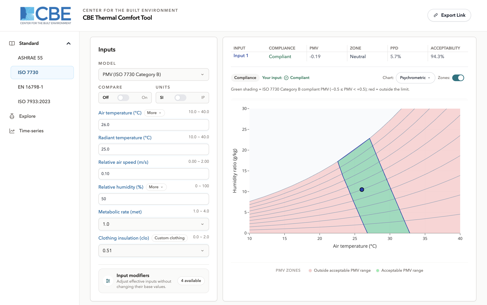

ISO 7730
/standard/iso-7730/1 modelSharing enabled
Overview
This workspace performs thermal comfort calculations following ISO 7730, the international standard for the analytical determination of thermal comfort using the PMV and PPD indices. It is new in this version of the tool: the previous documentation covered PMV as a single model without separating the ISO and ASHRAE treatments, and there was no ISO workspace to document.
The interface is arranged as elsewhere in the tool workspace navigation on the left, inputs beside it, results and charts to the right and everything is calculated in your browser as you type.
/standard/iso-7730/, and an
optional model segment selects the model directly /standard/iso-7730/pmv-iso/.
Primary interface components
Navigation and model selection
ISO 7730 defines one model, so the model selector on this workspace has a single entry: PMV / PPD (ISO 7730). It is selected by default and cannot be changed without leaving the workspace.
Input section
Values are typed directly or stepped with the arrow buttons. Above the fields sit the controls that apply to the whole workspace the model selector, the Compare toggle, the Units toggle, and the Share button in the header.
Temperature can be entered as separate air and radiant temperatures or as a single operative temperature. Humidity can be entered in five equivalent forms: relative humidity, humidity ratio, dew point, wet-bulb temperature or vapour pressure.
Results display
The result panel reports the predicted mean vote, the predicted percentage dissatisfied, and the thermal sensation category the vote falls into. Inputs outside the standard's applicability range are reported as out of range rather than given a verdict; the values are still shown.
Visualization charts
The chart selector offers four charts for this model:
| Chart | Shows |
|---|---|
| Psychrometric | Humidity ratio against temperature, with relative-humidity isolines and the comfort boundary drawn for your inputs. |
| Dynamic | A banded field over two quantities, coloured by the predicted mean vote. |
| Heat loss | The components of the body's heat loss against air temperature. |
| SET | Standard effective temperature across the input range. |
The same menu carries the export options, and a single legend sits below each plot.
Comfort assessment method
PMV / PPD method
The heat-balance method, taking the six factors air temperature, mean radiant temperature, air speed, humidity, metabolic rate and clothing insulation and returning the predicted mean vote and the percentage of occupants expected to be dissatisfied. Air speed is handled as relative air speed, which includes the movement the occupant generates.
Banding and the comfort boundary
ISO 7730 does not define a single acceptable/unacceptable band the way ASHRAE 55 does, so this workspace bands the chart by the seven thermal sensation categories Cold, Cool, Slightly Cool, Neutral, Slightly Warm, Warm, Hot and treats the Neutral category as the comfort criterion. The boundary lines drawn on the chart are the edges of that category.
Categories of thermal environment
ISO 7730 also describes categories of thermal environment, commonly A, B and C, with progressively tighter PMV limits. The tool evaluates at the category B expectation, which is the ordinary design case; for a different category, compare the reported PMV against that category's limit directly.
Edition
The model is evaluated against the 7730:2005 edition. Where the calculation library offers a newer default, this edition is pinned deliberately so results stay comparable with the published literature and with earlier versions of this tool.
Applicability
Clothing insulation is accepted up to 2 clo under ISO 7730 wider than the 1.5 clo that ASHRAE 55 allows, so a heavily dressed occupant may be assessable here and out of range there. Other inputs are checked against the standard's stated ranges in the same way.
Additional capabilities
Input modifiers. All four are available on this model measured air speed, morning clothing estimate, dynamic clothing and solar gain. See Input modifiers.
Clothing ensemble builder. Assembles a clothing value from a garment list organised by body zone.
Compare. Up to three sets of inputs at once, with per-input visibility and a picker for which set the chart is drawn around.
Unit selection. SI and Inch-Pound, held internally in SI so switching does not drift.
Sharing. The link button copies a URL encoding the current inputs and chart selection.
Where to go next
- PMV (ISO 7730) the model in detail, input by input.
- ASHRAE 55 the other PMV treatment, and how it differs.
- Explore the same model with selectable axes and editable bands.